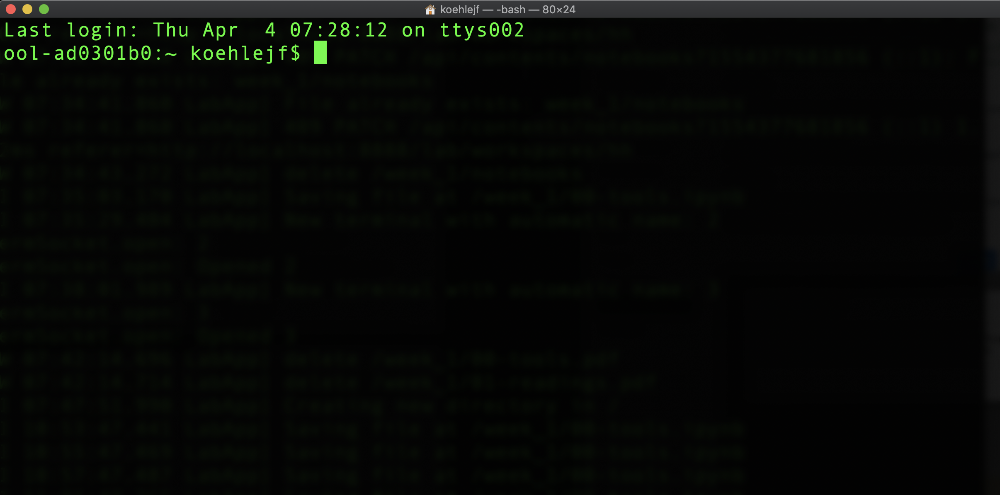
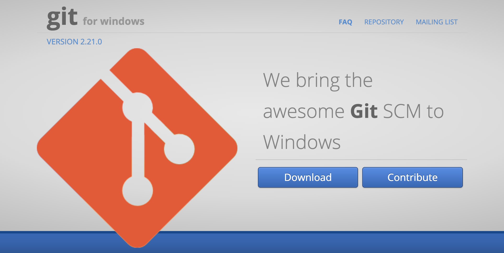

Tools for AI¶
There are many language new and old capable of carrying out Machine Learning and Artificial Intelligence oriented tasks. In recent years, a few open source tools have come to dominate the space. This guide is meant to give you a high level overview of some tools that are freely accessible and ready to plug and play with ML and AI algorithms.
Languages¶
According to the StackOverflow developer survey of 2018, Python is the dominant language for data scientists and machine learning specialists. Additionally, the R language, and the SQL database query language, and a newer language that is also gaining speed called Julia. (StackOverflow survey)
All of these languages are freely accessible and open source projects. Below, you will find links to each languages major documentation. We will discuss a tool for putting these languages to use next. Later, we focus on introducing the Python computing language and it’s Pandas library for working with data.
Python official documentation:https://www.python.org/
Julia language official documentation: https://julialang.org/
R documentation:https://www.r-project.org/
MySQL documentation: https://dev.mysql.com/doc/refman/8.0/en/
Jupyter Notebooks¶

Jupyter notebooks (jupyter.org) are a powerful tool for interacting with many different languages. The name indicates the connection to Julia, Python, and R. They offer an interactive web based interface to use many languages including the initial three. You can download the notebooks freely through the Anaconda distribution (here). The notebooks run locally in your web browser once installed.
Also, a few companies have begun to offer Jupyter notebooks through just a web browser. We will examine a few options in the following section. The notebooks are a wonderful tool for teams and for communicating and sharing results with stakeholders.
Videos from Software Carpentry (`Carpentries Site <>`__) on installing and getting started with Jupyter notebooks.
Introduction to Jupyter notebooks tutorial from Real Python: https://realpython.com/jupyter-notebook-introduction/
Jupyter Notebooks on the Web¶
GOOGLE COLAB
Both Google and Microsoft have recently opened up versions of the Jupyter notebooks for use online. For Google, the notebooks are integrated into your google drive, and are accessible at https://colab.research.google.com . If you have a google login, you can use this to login and save your notebooks to your google drive. More importantly, you can use google’s computational resources to tap GPU resources.
Collab has a number of tutorials available for getting up and running with Machine Learning in the cloud:
Getting Started with Collab: https://colab.research.google.com/notebooks/basic_features_overview.ipynb
Loading Data in Colab: https://colab.research.google.com/notebooks/io.ipynb
Introduction to Pandas: https://colab.research.google.com/notebooks/mlcc/intro_to_pandas.ipynb
Microsoft Azure Notebooks
Microsoft’s Azure Notebooks are similar to Google’s offering. They are accessible through a web browser, and can be configured to access additional processing power. They are accesible at https://notebooks.azure.com/.
Like Google, Microsoft has a number of tutorials to get up and running with the notebooks.
Accessing Data with Azure: https://notebooks.azure.com/Microsoft/projects/2018-data-access
Introduction to Python for Data Analysis: https://notebooks.azure.com/wesm/projects/python-for-data-analysis
Software for Local Computers¶
UNIX on Mac
When working locally, we will frequently want to interact with the file system of the machine to create, delete, move, and copy files. Typically, we will use the terminal application to execute this code. On a Mac, you have a terminal application already installed. You can find this by using the search bar looking for the Terminal application.
GitBash on Windows

On a Windows machine, certain commands can be executed in the Power Shell, but it is easier to download and install a different application to interact with UNIX. GitBash is a common application for Windows users.
WARNING!!: Be sure to choose the “ADD TO PATH” box during the installation process so you can access your other programs including Python and Jupyter notebooks.
Resources for Learning Bash
Software Carpentry lessons on UNIX shell: http://swcarpentry.github.io/shell-novice/